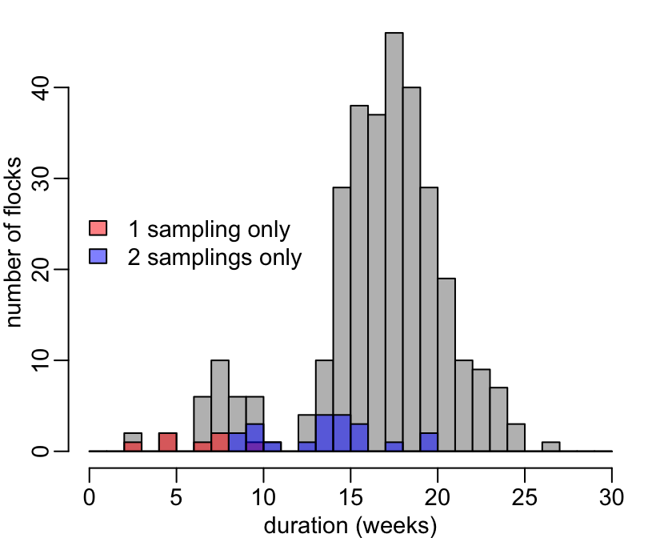

Installing the required packages:
> required <- c("dplyr", "grDevices", "magrittr", "mgcv", "purrr", "readxl", "tibble", "tidyr")
> to_install <- which(! required %in% row.names(installed.packages()))
> if (length(to_install) > 0) install.packages(to_install)Loading magrittr:
> library(magrittr)> lapply2 <- function(X, FUN, ...) setNames(lapply(X, FUN, ...), X)The ESVAC conversion factors are available from the table 2 of page 62 of the OIE report. A copy-paste of this table without headers is available here. We can read this file and format it to compute the following IU-to-mg convertion vector:
> if (! file.exists("esvac.txt"))
+ download.file("https://raw.githubusercontent.com/viparc/prophylactic/master/data/esvac.txt", "esvac.txt")> esvac <- readLines("esvac.txt") %>%
+ sub("^#.*", "", .) %>%
+ sub(" *", "", .) %>%
+ {.[. != ""]} %>%
+ matrix(ncol = 4, byrow = TRUE) %>%
+ as.data.frame(stringsAsFactors = FALSE) %>%
+ setNames(c("ab_vet_med", "ab_oie", "IU.mg", "mg.IU")) %>%
+ dplyr::filter(!grepl("methane", ab_vet_med)) %>%
+ dplyr::transmute(ab_oie = sub(" .*$", "", tolower(ab_oie)),
+ mg.IU = as.numeric(mg.IU)) %>%
+ dplyr::bind_rows(data.frame(ab_oie = "josamycin",
+ mg.IU = 0.001, stringsAsFactors = FALSE)) %$%
+ setNames(mg.IU, ab_oie)Note that we got rid off one of the colistin data and that we manually added the data for josamycin that was absent from the table.
Data on chicken weights as a function of age were collected for a previous study. The data are here. We will use these data for the current study:
> age_weight_data <- "https://www.dropbox.com/s/mbbejp9d8an1l4h/Supplementary_Data_Frontiers.xlsx?dl=0"
> if (! file.exists("age_weight.xlsx"))
+ download.file(sub("dl=0", "raw=1", age_weight_data), "age_weight.xlsx")> age_weight <- readxl::read_excel("age_weight.xlsx") %>%
+ tidyr::gather("week", "weight.kg", -FlockID, -Chicken) %>%
+ na.exclude() %>%
+ dplyr::mutate(week = sub("Week ", "", week)) %>%
+ dplyr::mutate_at(c("FlockID", "Chicken", "week"), as.integer)The ViParc data are in 2 excel files, each with many tabs. One of these files contains general information and the one contains the surveillance data:
> general_data <- "https://www.dropbox.com/s/gt6k1m781537vd2/16-4-2019-_18ZN_Category_V1_Data.xls?dl=0"
> surveillance_data <- "https://www.dropbox.com/s/7gjt77eltpm4ygw/16-4-2019-_18ZN_V1_Data.xls?dl=0"Let’s download the excel files:
> if (! file.exists("general_data.xls"))
+ download.file(sub("dl=0", "raw=1", general_data), "general_data.xls")
> if (! file.exists("surveillance_data.xls"))
+ download.file(sub("dl=0", "raw=1", surveillance_data), "surveillance_data.xls")For antimicrobial, disease and chicken data in the surveillance file, we need the following pairs of tabs respectively, that we have to merge:
> antimicrobial <- c("ANTIMICROBIAL", "ANTIMICROBIAL_GridEvent")
> disease <- c("DISEASE", "DISEASE_GridEvent")
> chicken <- c("MID_INOUT", "MID_INOUT_GridEvent")Here we’ll merge with the esvac dataframe that we generated above.
> drug_codes <- c("ANTIMICROBIAL", "ANTIMICROBIAL_GridAnti") %>%
+ lapply(readxl::read_excel, path = "general_data.xls") %>%
+ purrr::invoke(dplyr::right_join, ., "ANTIMICROBIAL_SEQ") %>%
+ dplyr::select(CODE, ANTINAME1, CONCENTRATION, GRIDUNIT, GRIDPACK, GRIDPACKUNIT) %>%
+ dplyr::filter(! ANTINAME1 %in% c("alicin", "axit oxolinic", "iodo-hydroxyquinoline", "metronidazol", "nystatin")) %>%
+ dplyr::mutate(ANTINAME1 = dplyr::recode(ANTINAME1, sunfadimethoxine = "sulfadimethoxine",
+ sunphamethoxazole = "sulphamethoxazole"),
+ GRIDUNIT = dplyr::na_if(GRIDUNIT, "NA"),
+ GRIDUNIT = dplyr::na_if(GRIDUNIT, "na"),
+ GRIDUNIT = dplyr::recode(GRIDUNIT, UI = "IU", mg = "MG"),
+ GRIDPACKUNIT = dplyr::na_if(GRIDPACKUNIT, "na"),
+ GRIDPACKUNIT = dplyr::na_if(GRIDPACKUNIT, "VI"),
+ GRIDPACKUNIT = dplyr::recode(GRIDPACKUNIT, g = "G", ml = "G", ML = "G"),
+ CONCENTRATION = dplyr::na_if(CONCENTRATION, "NA"),
+ CONCENTRATION = dplyr::na_if(CONCENTRATION, "na"),
+ CONCENTRATION = dplyr::recode(CONCENTRATION, S = "500"), # this will ultimately be corrected in CliRes
+ CONCENTRATION = as.numeric(CONCENTRATION),
+ CONCENTRATION = ifelse(GRIDUNIT == "IU", CONCENTRATION * esvac[ANTINAME1], CONCENTRATION),
+ GRIDUNIT = ifelse(GRIDUNIT == "IU", "MG", GRIDUNIT), # HAS TO BE HERE!!!
+ CONCENTRATION = ifelse(GRIDUNIT == "MG", CONCENTRATION / 1000, CONCENTRATION),
+ GRIDUNIT = ifelse(GRIDUNIT == "MG", "G", GRIDUNIT), # HAS TO BE HERE!!!
+ GRIDPACK = dplyr::na_if(GRIDPACK, "na"),
+ GRIDPACK = as.numeric(GRIDPACK),
+ GRIDPACK = ifelse(GRIDPACKUNIT == "KG", 1000 * GRIDPACK, GRIDPACK),
+ GRIDPACKUNIT = ifelse(GRIDPACKUNIT == "KG", "G", GRIDPACKUNIT), # HAS TO BE HERE!!!
+ proportion = CONCENTRATION / GRIDPACK)> surveillance <- c(antimicrobial, disease, chicken, "SAMPLE") %>%
+ lapply2(readxl::read_excel, path = "surveillance_data.xls")> samplesdata <- surveillance$SAMPLE %>%
+ dplyr::select(USUBJID, FLOCKSEQUENCE, SAMPLINGDATE, SAMPLINGVISIT) %>%
+ unique()Here we have to break the pipeline because we need to use the samplesdata at two distincts points in the section that follows:
> samples <- samplesdata %>%
+ dplyr::filter(SAMPLINGVISIT == "S") %>%
+ dplyr::select(-SAMPLINGVISIT) %>%
+ dplyr::rename(start = SAMPLINGDATE) %>%
+ dplyr::right_join(samplesdata, c("USUBJID", "FLOCKSEQUENCE")) %>%
+ dplyr::mutate(WEEK = as.numeric(floor((SAMPLINGDATE - start) / (60 * 60 * 24 * 7)) + 1),
+ sampling = TRUE) %>%
+ dplyr::select(-start, -SAMPLINGDATE, -SAMPLINGVISIT)> raw_symptoms <- surveillance[disease] %>%
+ unname() %>%
+ purrr::invoke(dplyr::left_join, ., c("USUBJID", "DISEASE_SEQ")) %>%
+ dplyr::select(USUBJID, FLOCKSEQUENCE, WEEK, RESPIRATORY, DIARRHOEA, CNS, MALAISE, LEGLESIONS, SUDDENDEATH)There are two corrections that cannot be done in CliRes and that we have to do here. We also have to break the pipeline because we uses the raw_symptoms dataframe that we just created at two distinct points in the section that follow:
> symptoms <- raw_symptoms %>%
+ # correction 1: 2 weeks 8 and no week 9 for cycle 2 of farm 8. These 2 weeks are identical
+ dplyr::filter(USUBJID == "75-008", FLOCKSEQUENCE == "02", WEEK == 8) %>%
+ dplyr::mutate(WEEK = 8:9) %>%
+ dplyr::bind_rows(dplyr::filter(raw_symptoms, !(USUBJID == "75-008" & FLOCKSEQUENCE == "02" & WEEK == 8))) %>%
+ # correction 2: week 19 instead of 10 for cycle 6 of farm 21:
+ dplyr::mutate(WEEK = ifelse(USUBJID == "75-021" & FLOCKSEQUENCE == "06" & WEEK == 19, 10, WEEK))Here we’ll merge with the drug_codes dataframe that we generated above.
> amu <- surveillance[antimicrobial] %>%
+ unname() %>%
+ purrr::invoke(dplyr::left_join, ., c("USUBJID", "ANTIMICROBIAL_SEQ")) %>%
+ dplyr::select(USUBJID, FLOCKSEQUENCE, WEEKNO, CODE, AMOUTUSED, PACKAGEUNIT) %>%
+ na.exclude() %>% ### DO WE NEED THIS???
+ dplyr::mutate(PACKAGEUNIT = dplyr::na_if(PACKAGEUNIT, "TAB")) %>%
+ dplyr::left_join(drug_codes, "CODE") %>%
+ tidyr::replace_na(list(ANTINAME1 = "unknown")) %>% # because some antibiotic names are unknown
+ dplyr::mutate(presence = 1,
+ antibiotic = proportion * AMOUTUSED,
+ antibiotic2 = antibiotic,
+ antiname2 = paste0(ANTINAME1, "_g"),
+ antiname3 = paste0(ANTINAME1, "_g.kg"),
+ ANTINAME1 = paste0(ANTINAME1, "_use")) %>%
+ dplyr::select(USUBJID, FLOCKSEQUENCE, WEEKNO, ANTINAME1, presence, antiname2, antibiotic, antiname3, antibiotic2) %>%
+ tibble::rowid_to_column() %>% # spread require unique row identifiers
+ tidyr::spread(ANTINAME1, presence) %>%
+ tidyr::spread(antiname2, antibiotic) %>%
+ tidyr::spread(antiname3, antibiotic2) %>%
+ dplyr::select(-rowid) %>% # we don't need rowid anymore
+ replace(is.na(.), 0) %>%
+ dplyr::group_by(USUBJID, FLOCKSEQUENCE, WEEKNO) %>%
+ dplyr::summarise_all(~sum(.)) %>%
+ dplyr::mutate_at(dplyr::vars(dplyr::ends_with("_use", FALSE)), function(x) x > 0)> chickdata <- surveillance[chicken] %>%
+ unname() %>%
+ purrr::invoke(dplyr::left_join, ., c("USUBJID", "MID_INOUT_SEQ")) %>%
+ dplyr::select(USUBJID, FLOCKSEQUENCE, WEEK, CHICKENTOTAL) %>%
+ unique() %>%
+ dplyr::mutate_at("CHICKENTOTAL", as.integer)Here we have to break the pipeline because chickdata is used at two distinct points in the part below:
> chickenn <- chickdata %>%
+ dplyr::group_by(USUBJID, FLOCKSEQUENCE) %>%
+ dplyr::summarize(completed = min(CHICKENTOTAL) < 1) %>%
+ dplyr::ungroup() %>%
+ dplyr::right_join(chickdata, c("USUBJID", "FLOCKSEQUENCE"))Now, we will extrapolate the weight data in order to cover the age range of the symptoms dataframe. First let’s extract the vector of weeks from symptoms:
> # weeks <- as.integer(1:max(symptoms$WEEK))
> weeks <- 1:max(symptoms$WEEK)Then, let’s do the extrapolation, using a GAM with a gamma distribution of errors and a log link:
> chickendata <- age_weight %>%
+ mgcv::gam(weight.kg ~ s(week), Gamma(link = log), .) %>%
+ mgcv::predict.gam(data.frame(week = weeks), "response") %>%
+ list(weeks) %>%
+ as.data.frame() %>%
+ setNames(c("individual_weight_kg", "WEEK")) %>%
+ dplyr::right_join(chickenn, "WEEK") %>%
+ dplyr::mutate(farm_weight_kg = individual_weight_kg * CHICKENTOTAL)Let’s now merge the symptoms, samples, amu and chickendata dataframes that we created above. For that, we will use the symptoms dataframe as the reference. It means that we want to check that
symptoms dataframe.amu or chickendata that are not in symptomsNote that, for now, we don’t check samples because, as a matter of fact there are some issues here, as outlined below.
Checking that there is no missing weeks in symptoms:
> symptoms %>%
+ dplyr::group_by(USUBJID, FLOCKSEQUENCE) %>%
+ dplyr::arrange(WEEK) %>%
+ dplyr::summarise(a = length(unique(diff(WEEK)))) %>%
+ dplyr::ungroup() %>%
+ dplyr::filter(a > 1) %>%
+ nrow() %>%
+ `<`(1)
[1] TRUEChecking that there is no week defined in amu but not in symptoms:
> dplyr::anti_join(amu, symptoms, c("USUBJID", "FLOCKSEQUENCE", "WEEKNO" = "WEEK")) %>%
+ nrow() %>%
+ `<`(1)
[1] TRUEChecking that there is no week defined in chickenn but not in viparc:
> dplyr::anti_join(chickendata, symptoms, c("USUBJID", "FLOCKSEQUENCE", "WEEK")) %>%
+ nrow() %>%
+ `<`(1)
[1] TRUEChecking that there is no week defined in chickenn but not in viparc:
> dplyr::anti_join(samples, symptoms, c("USUBJID", "FLOCKSEQUENCE", "WEEK")) %>%
+ nrow() %>%
+ `<`(1)
[1] FALSEWe are ready for the merging and writing to disk. Note that the amu dataframe contains only weeks for which there was some AMU. For that reason, we will have to perform some NA replacement after the merging of symptoms and amu.
> viparc <- symptoms %>%
+ dplyr::left_join(amu, c("USUBJID", "FLOCKSEQUENCE", "WEEK" = "WEEKNO")) %>%
+ dplyr::mutate_at(dplyr::vars(dplyr::ends_with("_use")), . %>% ifelse(is.na(.), FALSE, .)) %>%
+ dplyr::mutate_at(dplyr::vars(dplyr::ends_with("_g")), . %>% ifelse(is.na(.), 0, .)) %>%
+ dplyr::mutate_at(dplyr::vars(dplyr::ends_with("_g.kg")), . %>% ifelse(is.na(.), 0, .)) %>%
+ dplyr::left_join(chickendata, c("USUBJID", "FLOCKSEQUENCE", "WEEK")) %>%
+ dplyr::mutate_at(dplyr::vars(dplyr::ends_with("_g.kg")), ~ . / farm_weight_kg) %>%
+ dplyr::left_join(samples, c("USUBJID", "FLOCKSEQUENCE", "WEEK")) %>%
+ dplyr::mutate_at(dplyr::vars(FLOCKSEQUENCE, WEEK), as.integer) %>%
+ dplyr::arrange(USUBJID, FLOCKSEQUENCE, WEEK)Some of the completed flocks do not have 3 samplings:
> (tmp <- viparc %>%
+ dplyr::select(USUBJID, FLOCKSEQUENCE, completed, sampling) %>%
+ dplyr::group_by(USUBJID, FLOCKSEQUENCE) %>%
+ dplyr::summarise(completed = mean(completed), sampling = sum(sampling, na.rm = T)) %>%
+ dplyr::ungroup() %>%
+ dplyr::filter(completed > 0, sampling < 3))
# A tibble: 31 x 4
USUBJID FLOCKSEQUENCE completed sampling
<chr> <int> <dbl> <int>
1 75-003 1 1 2
2 75-012 1 1 2
3 75-012 4 1 2
4 75-015 2 1 2
5 75-016 2 1 2
6 75-019 2 1 0
7 75-022 2 1 2
8 75-022 4 1 2
9 75-029 3 1 0
10 75-029 4 1 2
# … with 21 more rowsThese are likely to be cycles shorter than expected, as suggested by the following figure:
> hist2 <- function(x, ...) hist(x, breaks = 0:30, ...)
>
> viparc %>%
+ dplyr::group_by(USUBJID, FLOCKSEQUENCE) %>%
+ dplyr::tally() %>%
+ dplyr::ungroup() %$%
+ hist2(n, col = "grey", xlab = "duration (weeks)", ylab = "number of flocks", main = NA)
>
> tmp %>%
+ dplyr::filter(sampling == 1) %$%
+ purrr::map2(USUBJID,
+ FLOCKSEQUENCE,
+ function(x, y)
+ dplyr::filter(viparc, USUBJID == x, FLOCKSEQUENCE == y) %>%
+ nrow()
+ ) %>%
+ unlist() %>%
+ hist2(col = adjustcolor("red", .5), add = TRUE)
>
> tmp %>%
+ dplyr::filter(sampling == 2) %$%
+ purrr::map2(USUBJID,
+ FLOCKSEQUENCE,
+ function(x, y)
+ dplyr::filter(viparc, USUBJID == x, FLOCKSEQUENCE == y) %>%
+ nrow()
+ ) %>%
+ unlist() %>%
+ hist2(col = adjustcolor("blue", .5), add = TRUE)
>
> legend("left", c("1 sampling only", "2 samplings only"), fill = adjustcolor(c("red", "blue"), .5), bty = "n")
Writing to disk anyway:
> if (!dir.exists("data")) dir.create("data")
> write.csv(viparc, "data/viparc.csv", FALSE, row.names = FALSE)